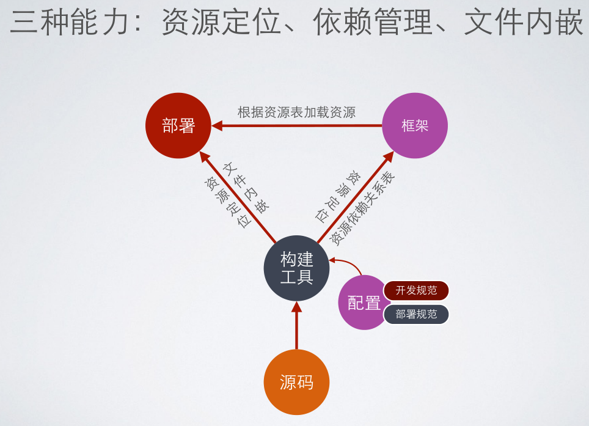

小技巧集合
主要记录在学习和编码过程中遇到的一些小问题以及对应的解决方法。
- 无js实现替换原始checkbox radio, :checked和:hover的使用
- 语义化的标签结构,h* 和 p 以及 span 的用法
- 写js一定注意加号 以及 dom 缓存
- transition 和 transform 以及 keyframe 的用法
禁止input粘贴复制，右键等1
onpaste="return false" oncontextmenu="return false" oncopy="return false" oncut="return false"
注意一些列表中，若内容不是固定字数的，一定要加上css省略
css实现一行内省略号,同时若出现换行则失效，所以需要禁止换行nobr标签和white-space : normal/nowrap, 同时，在android手机上（andriod 7）会出现字体上方2px左右被截取的bug，iphone上没有此问题1
2
3overflow: hidden;
text-overflow: ellipsis;
white-space: nowrap;
当行高限制了，overflow:hidden 有bug，上下端会被截取1-2px，解决方法：
使用padding代替margin、line-height
1 | // 解析URL |
jquery 表单序列化为json，1
2
3
4
5
6
7
8
9
10
11
12
13
14
15
16$.fn.serializeObject = function() {
var o = {};
var a = this.serializeArray();
$.each(a, function() {
if (o[this.name] !== undefined) { // 值不为undefined，已经存在对应的键值对了，此时为键值对为数组类型
if (!o[this.name].push) { // 若第一次重复（第二次找到该name值）则直接转换为存储数组
o[this.name] = [o[this.name]];
}
o[this.name].push(this.value || ''); // 直接插入已建立的数组中
} else { // 值为undefined，则表示还没有存在该键值对，添加此键值对同时将false转换为空
o[this.name] = this.value || '';
}
});
return o;
};
新建软连接：Windows下硬链接、软链接和快捷方式的区别
windows 文件文件夹映射junction和mklink，创建软硬链接
在目录下：D:\htdocs\real-auto-mooc\server\clouds\web>
mklink /J admin-dev D:\htdocs\admin-client
<meta http-equiv="X-UA-Compatible" content="IE=edge,chrome=1"> 的作用：话说神奇的content=”IE=edge,chrome=1”的meta标签内容
<meta name="renderer" content="webkit|ie-comp|ie-stand">的作用：浏览器内核控制标签meta说明
有的时候将一个span设置为inline-block后，同时设置50%宽度会出现换行现象，这种时候需要设置为block和float:left即可解决行内元素换行问题, 原因出在行内元素会自带间隔，其他的解决方法可以参考：去除inline-block元素间间距的N种方法
button（其实是很多许多元素）有四种伪类状态，比如focus，active，hover的存在的，同时在移动浏览器下，会出现tap按钮或超链接出现背景色的问题，这个时候可用-webkit-tap-highlight-color: transparent;将高亮色设置为透明。1
2
3
4
5
6
7
8
9
10
11
12/* 在移动端点击为tap时背景 */
a,a:hover,a:active,a:visited,a:link,a:focus{
-webkit-tap-highlight-color:rgba(0,0,0,0);
-webkit-tap-highlight-color: transparent;
outline:none;
background: none;
text-decoration: none;
}
button, button:hover, button:active, button:focus {
-webkit-tap-highlight-color: transparent;
}
被BD2问到的一些问题：
- JS中直接定义的字符串和new String()出来的字符串有什么区别：
怎么解释 JavaScript 中的一切皆是对象，拿字符串来说，new 出的和普通方法创建的字符串有哪些方面的区别？
js中，字符串字面量和通过构造函数得到字符串有什么本质区别嘛？ - JS中数组的map方法
JavaScript中的数组遍历forEach()与map()方法以及兼容写法 - CSS中，border-radius的顺序，以及值的几种方法
- Angularjs应用优化技巧
- 前端项目代码组织，及项目复杂度问题
- js中的稀松数组的问题:遍历时会跳过空白的，而不是undefined，即占位
javascript中的稀疏数组(sparse array)和密集数组 - match方法
placeholder颜色设置方式, 一下样式中，webkit需要单独写，否则无效1
2
3
4
5
6
7
8
9
10
11
12::-webkit-input-placeholder { /* WebKit browsers */
color: #999;
}
:-moz-placeholder { /* Mozilla Firefox 4 to 18 */
color: #999;
}
::-moz-placeholder { /* Mozilla Firefox 19+ */
color: #999;
}
:-ms-input-placeholder { /* Internet Explorer 10+ */
color: #999;
}
锯齿边框1
2
3
4
5
6
7
8
9
10
11.coupon li .fr::before{
content: ' ';
background: radial-gradient(transparent 0, transparent 4px, #41caed 4px);
background-size: 11px 10px;
background-position: -1px 10px;
width: 4px;
height: 100%;
position: absolute;
left: 0;
bottom: 0;
}
对url的操作一定需要自己封装，
同时对form表单的操作，同时也需要自己封装一套前端校验的类
word-break: break-all; 针对长的英文单词，设置单词内换行，可以避免多余单词溢出
white-space: nowrap; 强制不换行，避免内部块级元素最大宽度适应父元素
对iphone5宽度适配1
2
3@media screen and (max-width: 320px) {
/* */
}
输入框仅允许输入数字(使用正则替换所有非数字)1
style="ime-mode:Disabled" onkeyup="value=value.replace(/[^\d]/g,'')" onbeforepaste="clipboardData.setData('text',clipboardData.getData('text').replace(/[^\d]/g,''))"
user-select:none; css设置此属性可以在用户双击文字时不选中
CSS媒体查询总结，(CSS3 Media Queries在iPhone4和iPad上的运用)[http://www.w3cplus.com/css3/css3-media-queries-for-iPhone-and-iPads]*目前iphone4已经淘汰，最低为iphone5，但是分辨率没有什么变化，依然可以使用*
实现移动端图片懒加载（当图片滚动到视窗的时候才加载）, 参考移动端图片延迟加载同时也支持zepto
加载图片的时候不直接将图片地址写入src属性中（src中可以预先设置为一个很小的默认图片地址），而是写入一个自定义属性中比如data-src,然后 监听滚动，当滚动到停止一定的时间（delay）后再执行查看是否有未加载图片出现在视窗内，此时再加载图片，即替换这些视窗内的图片的src值为data-src值。
若想要使用伪元素before或after作为占位元素（插入到正常流中），则需要使用浮动，同时百分比宽高是以寄主元素（即伪元素前的元素）为参照。
关于git文件三种状态及其之间的转换规则：Git中三种文件状态及其转换
在vscode新安装后使用内置git提交的时候会有类似Changes not staged for commit的提示，点击always即可（表示一键add并且commit，但是需要手动push）
hexo博客遇到如下报错，可以试着重新安装.npm install hexo-renderer-sassERROR Plugin load failed: hexo-renderer-sass Error: Cannot find module 'node-sass'
注意：最开始试过重新安装node-sass, 但报没有python运行环境，猜测应该不是这个的问题，因为node安装包的时候就不需要python才对。
关于表单自动提交，可以监听document的keyup事件，若e.keyCode === 13则表示回车
js 怎样判断用户是否在浏览当前页面1
2
3
4
5
6
7
8
9
10
11
12
13var hiddenProperty = 'hidden' in document ? 'hidden' :
'webkitHidden' in document ? 'webkitHidden' :
'mozHidden' in document ? 'mozHidden' :
null;
var visibilityChangeEvent = hiddenProperty.replace(/hidden/i, 'visibilitychange');
var onVisibilityChange = function(){
if (!document[hiddenProperty]) {
console.log('页面非激活');
}else{
console.log('页面激活')
}
}
document.addEventListener(visibilityChangeEvent, onVisibilityChange);
git pull时遇到error: cannot lock ref
判断元素的隐藏和显示，主要通过获取元素节点的hidden和visible两个属性来进行判断，比如jquery
怎样判断jQuery 元素是否显示与隐藏
针对FireFox,Chrome,Opera的CSS Hack
当jquery无法设置某些表单元素的状态时，则可以使用原生js对表单元素设置状态，比如checkbox，select
js中的函数重复声明则会覆盖，但不存在重载，所以重复定义不会有问题，但是重复的对同一元素添加事件监听会导致多个事件依次响应。
关于使文本尾部始终紧跟一个图标的方法，无论是字体超出隐藏还是正常状态（灵活使用background设置在文本框邮编）：1
2
3
4display: inline-block;
max-width: 110px;
padding-right: 14px;
background: url(../../../images/icon-db-arrow.png) no-repeat center right;
在url中传中文，需要使用escape()对中文进行转码,然后对应的unescape()解码
多行文本溢出显示省略号(…)全攻略1
2
3display: -webkit-box;
-webkit-box-orient: vertical;
-webkit-line-clamp: 3;
IOS：Safari不兼容Javascript中的Date问题
有的时候想要使用表单的一些属性，但是又不想使用默认的验证方式，比如<input type="email" name="user_email" />会自动使用浏览器的邮箱验证，但是样式可能与站点不符，一般的做法中，这时只能使用type="text"了，但是其实此时可以在form表单上指定novalidate 属性。
这样告诉浏览器不对输入进行验证的表单。
关于优化的问题，不应该过早优化，在遇到实际问题需要解决前，不应该过早优化，优化应该是解决问题。不要忙于优化而降低了开发效率，因为开发的时间很重要，应该将时间花在解决实际问题上。
关于withCridential=true的问题：使用withCredentials发送跨域请求凭据 , 以及 跨域资源共享 CORS 详解
H5移动端使用定位改变top和left模拟元素移动，在一些配置低的手机上非常卡顿。
关于浏览器的可是区域/窗口宽高，以及文档宽高:js/jquery获取浏览器窗口可视区域高度和宽度以及滚动条高度实现代码：1
2
3
4
5
6$(window).height() // 窗口可视区域高度， jq写法
document.documentElement.clientHeight // 原生写法
$(document).height() // 整个文档的高度（真正的高）
document.body.offsetHeight // 原生写法
$(document).scrollTop() // 滚动条距文档顶部的高度（能获得已经滚动多少距离）
document.body.scrollTop // 原生写法
图片容错1
2
3
4function imgerror(img, src){
img.src = src || "img src";
img.onerror = null;
}
使用window.open()打开的新窗口会有一个opener对象，是对父窗口的引用。
关于iOS8下H5页面的排版混乱问题，以及IE9兼容问题：
关于IE与placeholder的支持问题：
完美解决IE不支持placeholder的问题
在IE下的各种奇特表现：一个input输入框，若只设置line-height而不设置height，则line-height无法将input撑高，为原始默认值，而只有设置了height才能将input撑高。1
2
3
4
5
6
7
8
9.number [type=text]{
width: 50px;
height: 27px; /* 此height是关键 */
line-height: 25px;
border: 1px solid #bfbfbf;
text-align: center;
box-sizing: border-box;
padding: 0;
}
同时，内部绝对定位元素是以a元素为准，而不是a的带相对定位的li父元素，所以需要显示设置其宽高，1
2
3
4
5
6.iconwrap.cart:hover>.drop a {
height: 40px;
width: 100%;
position: relative;
display: block;
}
元素设置为绝对定位后,必须显示重置line-height为normal,否则top和bottom会起反作用, 在IE中line-height与其他标准浏览器有兼容性问题，1
2
3
4
5
6
7
8
9
10
11
12
13
14
15
16
17
18
19.iconwrap.cart:hover>.drop .pricewrap,
.iconwrap.cart:hover>.drop .title{
left: 80px;
font-size: 12px;
line-height: normal;
}
.iconwrap.cart:hover>.drop .title{
top: 0;
color: #333;
}
.iconwrap.cart:hover>.drop .pricewrap{
bottom: 0;
}
.iconwrap.cart:hover>.drop .icon-trash{
bottom: 0;
right: 0;
line-height: normal;
color: #c8c8c8;
}
关于弹出窗口的兼容，若不带open方法的第三个参数，即不设置弹出窗口的一些基本属性，则使用新tab打开，而不是弹出窗口，而设置一些窗口基本属性后则是弹出式的，同时，很多弹出窗口的属性也有所改变，比如无法取消地址栏，默认没有收藏栏，没有工具栏。
ff和chrome下对弹出窗口设置的实现不太一样,代码：window.open('',"_blank",'width=800');
在ff下，宽度设置，高度自适应，但是在chrome下，没有设置高度则宽度也不会被设置，而是自动适应父窗口。
IE下，使用window.open()打开新窗口bug：打开百度这样的正常域名就可以，但是打开自己本地的网站（127.0.0.1或localhost）就是空白页,目前不知道是什么原因，解决方法，使用a标签跳转，同时在js中location.href是可以使用的
在IE9中对span设置inline-block同时与input组合使用并设置高度时，可能会出现高度不一致的情况（有的时候会一致，有的时候不会，这种情况无法准确定位原因）1
<label class="number"><span class="minus">-</span><input type="text" value="5"><span class="add">+</span></label>
1 | .number span { |
在IE中，css去除ie自带的input删除功能1
input::-ms-clear{display:none;}
chrmo下ng报错：An invalid form control with name=’’ is not focusable？
出现该错误的原因是chrome发现了有隐藏（display:none）的required需求元素，所以会出错。
将ng-show改为ng-if，从隐藏标签变为移除dom，可以避免这个错误。
后端接收不到AngularJs中$http.post发送的数据的问题
hexo下的bug，在markdown中双写大括号,如下：1
{{}}
必须使用整段代码的语法，而不是用行内代码的转义，否则会出现render错误，提示1
unexpected token: }}
在绑定label时，若lable中有checkbox这样自身带有点击效果的元素，则绑定的点击事件会被触发两次，解决的方法就是，将label中的checkbox移到外面，然后用for指定id。
使用css动画时，animation-fill-mode:forwards可让动画停留在最后一帧，不加的话 在1s钟之后 动画会回到初始帧
jq有一个grep方法，能够过滤数组, 第一个参数为数组，第二个是判断函数，函数执行时会传入两个参数，第一个参数为元素，第二个参数为元素索引1
2
3jQuery.grep(arr, function(e, i ) {
return ( e !== 5 && i > 4 );
});
在windows下，使用textarea获取内容时，需要注意换行为两个符号\r\n，分割字符串时一定要对这两个特殊的转义字符做判断。1
str.split(/[\n\r、]/)
H5本地预览图片,采用base64方式1
2
3
4
5
6
7
8
9
10// 判断浏览器是否支持FileReader接口
if (typeof FileReader == 'undefined') {
alert('浏览器太老了，不支持预览图片，请更换现代浏览器');
// return false;
}
var reader = new FileReader(); //将文件以Data URL形式读入页面
reader.readAsDataURL(file);
reader.onload = function (e) {
var picUrl = this.result;
}
离开页面时弹出提示框，询问是否确定离开1
2
3
4
5
6
7$(window).on('beforeunload', function(e){
e = e || window.event; //此方法为了在firefox中的兼容
if (e) {
e.returnValue = '确定要离开此页吗?'; // For IE and Firefox prior to version 4
}
return '...'; // 貌似弹出对话框的内容和title于代码中返回的字符串无关，测自chrome
});
当点击弹出文件选择框慢是由于文本输入框中的accept设置为通配符，此时解决的方法为具体设置为某确定的类型， input[file]标签的accept=”image/*”属性响应很慢的解决办法1
<input type="file" accept="images/*">
同时，如下的file包裹在button中时，点击button，chrome下正常弹出文本框，而在firefox下，无法触发文本选择框。 将button改为span，同时span上不能绑定点击事件，否则也无法弹出文本选择框。1
2
3
4
5
6
7
8
9<button type="button" class="pr">
文件上传按钮
<input type="file" class="pa" accept=".csv, application/vnd.openxmlformats-officedocument.spreadsheetml.sheet, application/vnd.ms-excel">
</button>
<span class="pr button">
文件上传按钮
<input type="file" class="pa firfox" accept=".csv, application/vnd.openxmlformats-officedocument.spreadsheetml.sheet, application/vnd.ms-excel">
</span>
IE11 下无法识别CSS的initial属性值，但是可以识别auto属性值，所以，若需要重置css的某个属性，尽量使用auto
![initial]
在placeholder中若需要换行，则可使用HTML实体字符
，表示换行符
pre 自动换行1
2
3
4
5
6pre{
white-space: -moz-pre-wrap;
white-space: -o-pre-wrap;
word-wrap: break-word;
white-space: pre-wrap;
}
允许forever时，若以及存在log文件，则需要加上-a才可以重新start一个新的脚本,比如启动一个express项目：1
forever start -a ./bin/www
对git项目加tag时，一定要将tag先push，否则chechkout到其他分支或标签后会丢失更新，同时默认的git push不会上传所有的tag和branch，需要手动指定：1
git push origin v0.1.0
当将页面覆盖遮罩时，常常需要禁止滚轮滚动，即将页面overflow设置为hidden，由于滚轮消失会导致页面扩大，有一个明显的向右移动的切换。若想要平稳的切换遮罩层则需要特别注意。1
2
3
4
5
6
7
8
9
10
11
12
13
14
15
16// 禁止滚动时，增加body右边距，防止页面因为没有滚动条发生偏移
(function () {
var w1 = $(window).width();
var $body = $("html");
$body.addClass('oh');
var w2 = $(window).width();
$body.removeClass('oh');
console.log(w2, w1, w2-w1);
$("<style type='text/css'>.stop-scrolling{margin-right:" + (w2 - w1) + "px;}</style>").appendTo("head");
})();
// 显示遮罩时使用语句
$("html").css("overflow", "hidden").addClass("stop-scrolling");
// 隐藏时则
$("html").css("overflow", "auto").removeClass("stop-scrolling");
有的时候需要动态插入iframe，然后获取iframe中的元素,并对其进行操作，通过jquery则可以这样做，onload用于检测页面加载是否完成(对于script元素也可以这样做，同样的原理)：1
2
3
4
5
6var frame = $('<iframe frameborder="0" src="..." id="previewIframe"></iframe>');
$('body').append(frame);
frame[0].onload = function () {
$(frame[0].contentDocument).find('body,pre').css('margin','0'); // 将默认样式覆盖
...
}
通过Object.defineProperty实现双向绑定：1
2
3
4
5
6
7
8
9
10
11var obj = {pwd: 1213};
Object.defineProperty(obj, 'name', {
get: function(){
console.log('get revoke');
},
set: function(val){
console.log('set revoke');
document.querySelector('#view').innerText = val;
}
});
如此，当对obj.name赋新值时，会自动调用set方法，然后对view元素进行操作，将其内容更新为新值。
hexo3.x在node版本8.xX（npm5.x）环境下会报找不到hexo命令的错，将node降到6.x（npm3.X）则能够正常运行。
2017.12.26记
windows下的nvm感觉不是很好用，在国内，下载安装node实在太久了。。。
hexo中配置了deploy需要安装对应的hexo-deployer-git包，否则在hexo d部署时会报错：ERROR Deployer not found: git
2018.1.11
关于MVVM与jQuery，MVVM基本上颠覆了jQuery以DOM为中心的体系，MVVM的出发点是数据，核心是数据。数据是底层，是心脏，数据发生变化，作为表层的UI就必然发生变化。若用户修改了UI元素的值，相当于透过UI元素直接修改了底层的数据。为了让用户专注于数据，许多绑定在名字上就带有各种操作节点的功能，如ms-html，ms-click，ms-class等，把这些原本是由用户处理的代码交给框架处理，用户只需要在目标节点上声明一下，最多传一两个参数，将它与ViewModel关联起来，DOM原本常用的工作就被掩盖了。若DOM很复杂，则$watch回调可以做这些额外的处理工作。
那么jQuery就彻底抛弃了吗？当然不会，没有任何一个库能比它处理DOM的能力更强，在浏览器的世界总是需要与DOM打交道，把jQuery作为MVVM的一个底层单元是非常合理而自然的，而且多亏而了jQuery，需要生僻的浏览器特性与Bug被发掘出来，给出侦测的手段与修复的办法，若自己实现，也最多能做到半成品的jQuery。同时太多的jQuery like库，比如在angular内有jqLite，avalon也有一个mini jQuery对象。网站越大，用户越多，需要兼容的浏览器就越多，这时就越发的需要jQuery。
在MVVM中，jQuery的样式操作、属性操作、事件系统是非常有用的。但如大规模移动删除节点，knockout、emberjs等有更好的方式，数据缓存上，H5的data-*特性节点更为实用，起码在移除节点时不需要调用专门的removeDat方法。jQuery的ajax非常强大，但当它被路由系统覆盖起来时，就不需要那么多配置了。动画引擎上，Bootstrap基于CSS3的动画其实已经够普通开发使用了。而jQuery的选择器在MVVM中其并没有什么用武之地，因为MVVM框架会扫描DOM，比jQuery对DOM遍历的次数更少，并且选择器其实会增加HTML和JS的耦合度，特别是一些结构伪类。
而MVVM能让开发者换一个角度来看待浏览器世界。MVVM将jQuery的DOM操作的方式屏蔽掉了，将DOM与业务分离，所以用它组织代码会少很多，且功能越多越体现MVVM的优势。
2018.1.14
hexo报错：hexo FATAL Cannot set property ‘lastIndex’ of undefined
解决方法：_config.yml 文件中的高亮功能设置auto_detect: false
2018.2.16
《多维前端架构设计 PPT》 ,需要充分考虑资源加载与管理
• 按需：最⼩小化增量加载程序资源
• 合并：提⾼高多个资源加载的总体速度
• 缓存：充分利⽤用浏览器缓存实现媲美本地应⽤用的响应效率
解决⽅方案：模块化 的前端资源管理系统，实现模块化资源管理所需的 三种 能⼒：
- 资源定位，将 项目路径 转换成 部署路径 的能⼒，使用 部署路径 定位资源是模块 独⽴立性 的保障
- 依赖管理，依赖声明、依赖管理、按需加载的能⼒，⼯程化的依赖管理应该是构建⼯工具 与 模块化框架 共同配合完成的
- 文件嵌⼊，把⼀一个⽂文件的内容直接内嵌到另外⼀一个⽂文件中的能⼒力，虽然 不是必须 的开发能⼒力需求（可以⽤用依赖管理或资源定位替代）但很多时候可以为开发带来 便利

在模块化之上，进⾏行 组件化 开发, 比如Vue.js